Multi-Omics Exploratory Analysis with cliomicplot
Lucas VHH Tran
2026-07-16
Source:vignettes/multiomics.Rmd
multiomics.RmdOverview
This vignette demonstrates a multi-omics exploratory analysis workflow using cliomicplot. We’ll generate four figures commonly found in omics publications:
- Figure 1 — PCA with confidence ellipses
- Figure 2 — Correlation heatmap with clustering and significance
- Figure 3 — Volcano plot for differential expression
- Figure 4 — MA plot for DE quality assessment
library(cliomicplot)
#> cliomicplot 0.1.0 - Publication-ready clinical & omics plots
#> Main function: cliplot() | Themes: clitheme() | Params: clipar()
clipar(stat.test = NULL) # disable auto stat annotationsFigure 1: PCA with Confidence Ellipses
Principal Component Analysis (PCA) is the workhorse of omics data exploration. cliomicplot can compute PCA from raw data or accept pre-computed results:
From raw data
clitheme("nature")
#> Theme set to: nature
cliplot(iris[, 1:4],
type = type_pca(
pc_x = 1,
pc_y = 2,
center = TRUE,
scale. = TRUE,
add_ellipse = TRUE,
ellipse_level = 0.95,
point_size = 2.5,
label_samples = FALSE
),
by = iris$Species,
palette = "npg",
stat.test = NULL,
title = "**Figure 1** — PCA of Iris Morphometric Data",
subtitle = "PC1 (72.9%) vs. PC2 (22.9%), 95% CI ellipses") +
cli_markdown()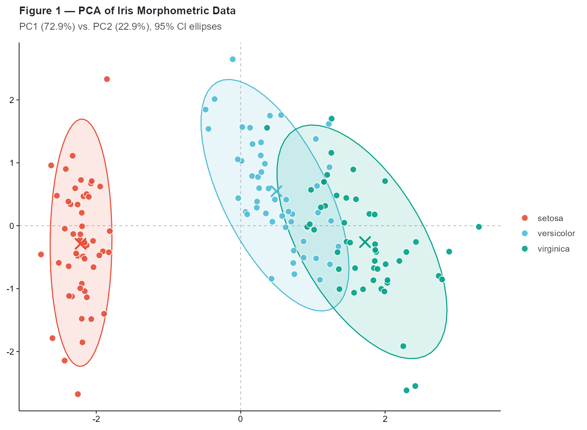
The axis labels automatically include variance explained percentages, and confidence ellipses are drawn around each group.
From pre-computed PCA
When you already have PCA results (e.g., from prcomp(),
DESeq2, or another pipeline), cliomicplot accepts the
scores directly:
pca_res <- prcomp(iris[, 1:4], center = TRUE, scale. = TRUE)
scores <- as.data.frame(pca_res$x)
scores$Species <- iris$Species
cliplot(PC2 ~ PC1, data = scores, by = scores$Species,
type = "points",
stat.test = NULL,
palette = "d3_category10",
title = "**PCA Scores** — Pre-computed by prcomp()",
theme = "science") +
cli_markdown()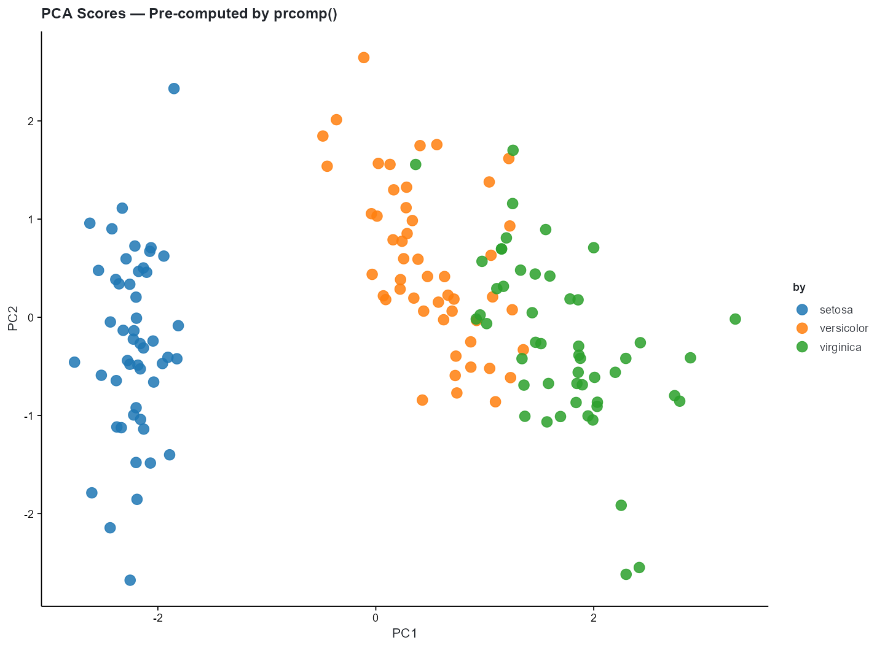
PCA with sample labels
cliplot(iris[, 1:4],
type = type_pca(
add_ellipse = FALSE,
label_samples = TRUE,
label_size = 2.5,
point_size = 2
),
by = iris$Species,
palette = "jco",
stat.test = NULL,
title = "**PCA with Sample Labels**") +
cli_markdown()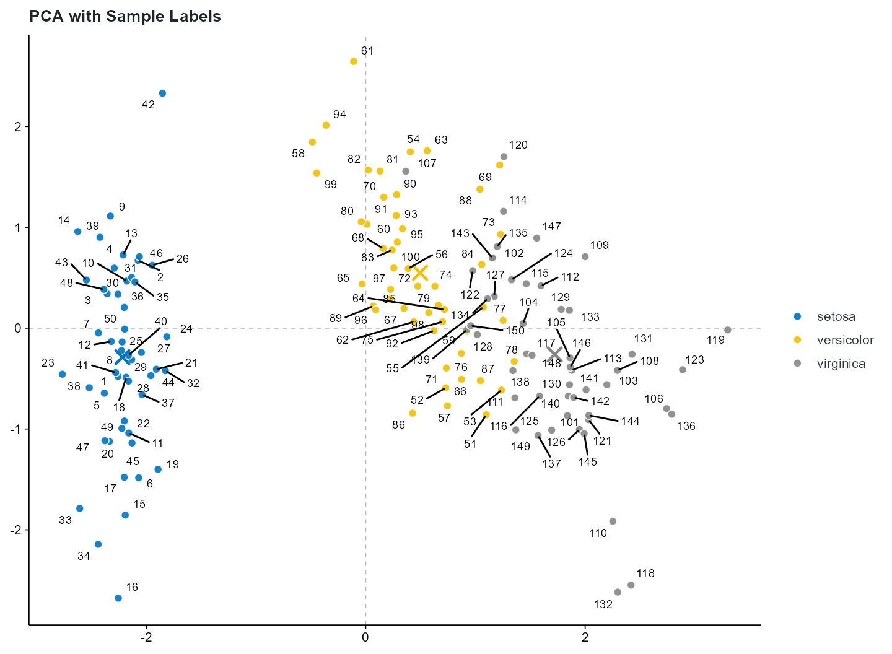
Figure 2: Correlation Matrix
Correlation analysis with significance stars and hierarchical clustering:
clitheme("cli_minimal")
#> Theme set to: cli_minimal
cliplot(mtcars[, 1:7],
type = type_correlation(
method = "pearson",
type = "lower",
add_coef = TRUE,
coef_size = 3.5,
cluster = TRUE,
sig_level = 0.001
),
stat.test = NULL,
title = "**Figure 2** — Pearson Correlation Matrix (mtcars)",
subtitle = "Lower triangle | *** p < 0.001") +
cli_markdown()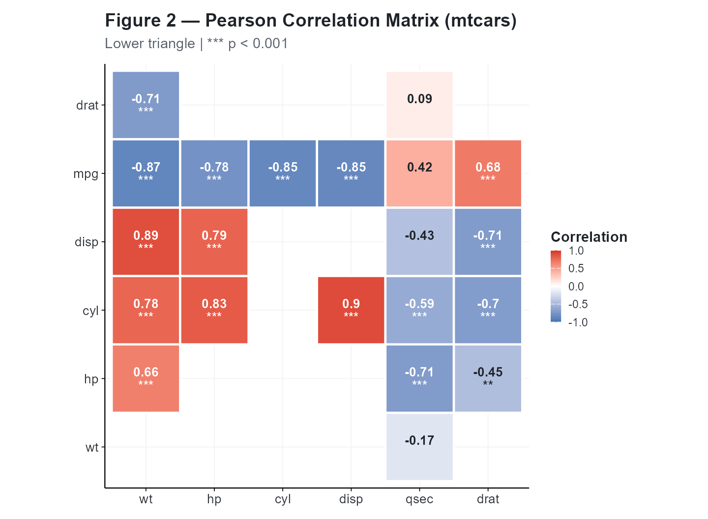
Correlation options
# Spearman correlation, upper triangle, no coefficients
cliplot(mtcars[, 1:5],
type = type_correlation(
method = "spearman",
type = "upper",
add_coef = FALSE,
cluster = FALSE
),
title = "**Spearman Correlation** — Upper Triangle") +
cli_markdown()
#> Warning in cor.test.default(mat[, i], mat[, j], method = method): Cannot
#> compute exact p-value with ties
#> Warning in cor.test.default(mat[, i], mat[, j], method = method): Cannot
#> compute exact p-value with ties
#> Warning in cor.test.default(mat[, i], mat[, j], method = method): Cannot
#> compute exact p-value with ties
#> Warning in cor.test.default(mat[, i], mat[, j], method = method): Cannot
#> compute exact p-value with ties
#> Warning in cor.test.default(mat[, i], mat[, j], method = method): Cannot
#> compute exact p-value with ties
#> Warning in cor.test.default(mat[, i], mat[, j], method = method): Cannot
#> compute exact p-value with ties
#> Warning in cor.test.default(mat[, i], mat[, j], method = method): Cannot
#> compute exact p-value with ties
#> Warning in cor.test.default(mat[, i], mat[, j], method = method): Cannot
#> compute exact p-value with ties
#> Warning in cor.test.default(mat[, i], mat[, j], method = method): Cannot
#> compute exact p-value with ties
#> Warning in cor.test.default(mat[, i], mat[, j], method = method): Cannot
#> compute exact p-value with ties
#> Warning in cor.test.default(mat[, i], mat[, j], method = method): Cannot
#> compute exact p-value with ties
#> Warning in cor.test.default(mat[, i], mat[, j], method = method): Cannot
#> compute exact p-value with ties
#> Warning in cor.test.default(mat[, i], mat[, j], method = method): Cannot
#> compute exact p-value with ties
#> Warning in cor.test.default(mat[, i], mat[, j], method = method): Cannot
#> compute exact p-value with ties
#> Warning in cor.test.default(mat[, i], mat[, j], method = method): Cannot
#> compute exact p-value with ties
#> Warning in cor.test.default(mat[, i], mat[, j], method = method): Cannot
#> compute exact p-value with ties
#> Warning in cor.test.default(mat[, i], mat[, j], method = method): Cannot
#> compute exact p-value with ties
#> Warning in cor.test.default(mat[, i], mat[, j], method = method): Cannot
#> compute exact p-value with ties
#> Warning in cor.test.default(mat[, i], mat[, j], method = method): Cannot
#> compute exact p-value with ties
#> Warning in cor.test.default(mat[, i], mat[, j], method = method): Cannot
#> compute exact p-value with ties
#> Warning in cor.test.default(mat[, i], mat[, j], method = method): Cannot
#> compute exact p-value with ties
#> Warning in cor.test.default(mat[, i], mat[, j], method = method): Cannot
#> compute exact p-value with ties
#> Warning in cor.test.default(mat[, i], mat[, j], method = method): Cannot
#> compute exact p-value with ties
#> Warning in cor.test.default(mat[, i], mat[, j], method = method): Cannot
#> compute exact p-value with ties
#> Warning in cor.test.default(mat[, i], mat[, j], method = method): Cannot
#> compute exact p-value with ties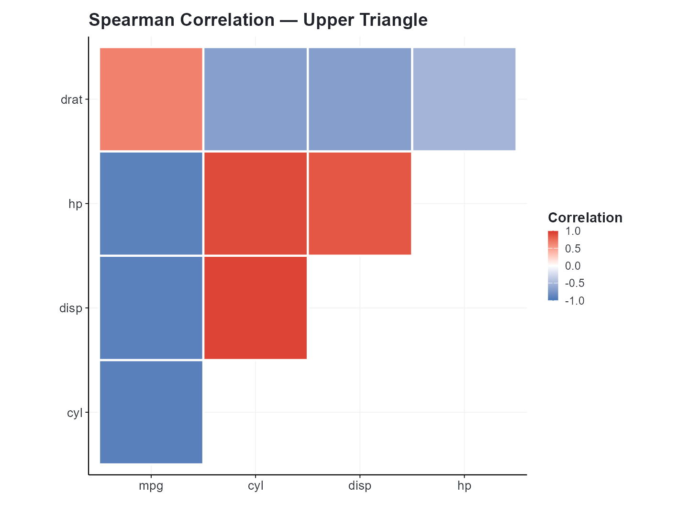
# Full matrix with all significance levels
cliplot(mtcars[, 1:6],
type = type_correlation(
method = "pearson",
type = "full",
add_coef = TRUE,
cluster = TRUE,
sig_level = 0.05
),
title = "**Full Correlation Matrix** with Significance Stars") +
cli_markdown()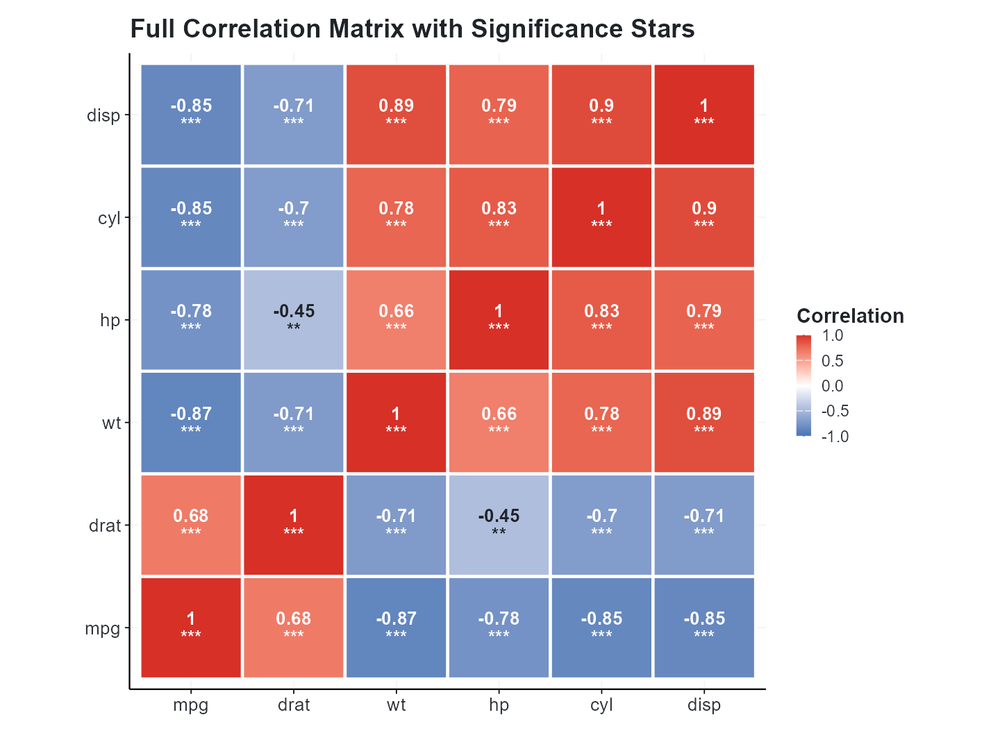
Figure 3: Volcano Plot — Differential Expression
The volcano plot is the canonical visualization for differential expression analysis. We’ll generate realistic simulated data:
set.seed(42)
# Generate 8000 "genes" — most are null
n_genes <- 8000
de_data <- data.frame(
logFC = rnorm(n_genes, 0, 0.7),
PValue = 10^-rnorm(n_genes, 2.5, 1.8),
row.names = paste0("GENE", 1:n_genes)
)
# Inject 200 "true" DE genes
sig_idx <- sample(1:n_genes, 200)
de_data$logFC[sig_idx] <- rnorm(200, ifelse(runif(200) > 0.5, 2.0, -2.0), 0.5)
de_data$PValue[sig_idx] <- 10^-runif(200, 5, 15)
cat(sprintf("Genes tested: %d\n", n_genes))
#> Genes tested: 8000
cat(sprintf("DE genes (|log2FC| > 1, p < 0.05): %d\n",
sum(abs(de_data$logFC) > 1 & de_data$PValue < 0.05)))
#> DE genes (|log2FC| > 1, p < 0.05): 1081
clitheme("cell")
#> Theme set to: cell
cliplot(-log10(PValue) ~ logFC, data = de_data,
type = type_volcano(
pval_cutoff = 0.01,
fc_cutoff = 1,
label_genes = "significant",
max_overlaps = 25,
point_alpha = 0.5
),
title = "**Figure 3** — Volcano Plot of Differential Expression",
subtitle = "FDR < 0.01, |log<sub>2</sub>FC| > 1",
caption = paste0("Top labeled genes; ", n_genes, " probes tested")) +
cli_markdown()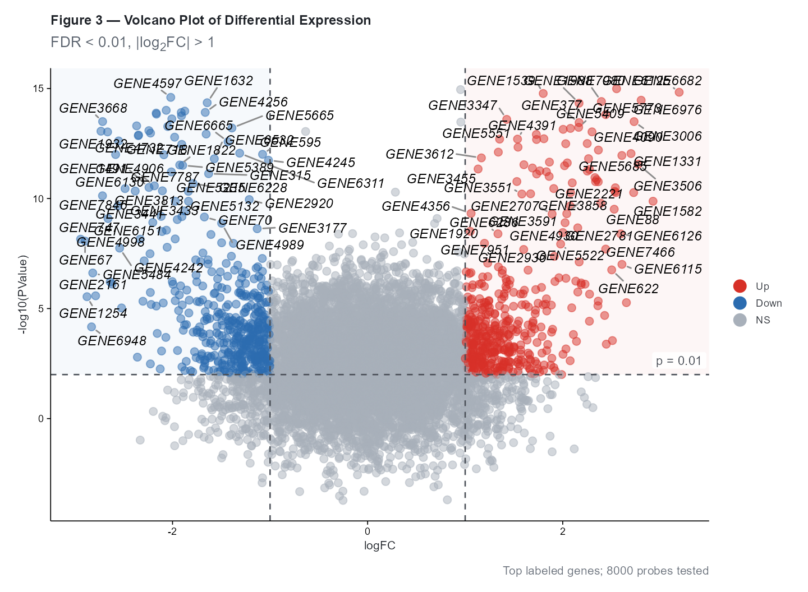
Volcano plot color scheme
| Category | Condition | Default Color |
|---|---|---|
| Up (red) | and | #E64B35 |
| Down (blue) | and | #4DBBD5 |
| NS (grey) | All other genes | grey70 |
Customizing the volcano
# Tighter thresholds, different colors
cliplot(-log10(PValue) ~ logFC, data = de_data,
type = type_volcano(
pval_cutoff = 0.001,
fc_cutoff = 1.5,
label_genes = NULL, # no labels
up_color = "#BC3C29", # NEJM red
down_color = "#0072B5", # NEJM blue
ns_color = "grey85",
point_size = 1.5,
point_alpha = 0.4
),
palette = "volcano",
title = "**Volcano Plot** — Stringent Thresholds",
subtitle = "p < 0.001, |log<sub>2</sub>FC| > 1.5") +
cli_markdown()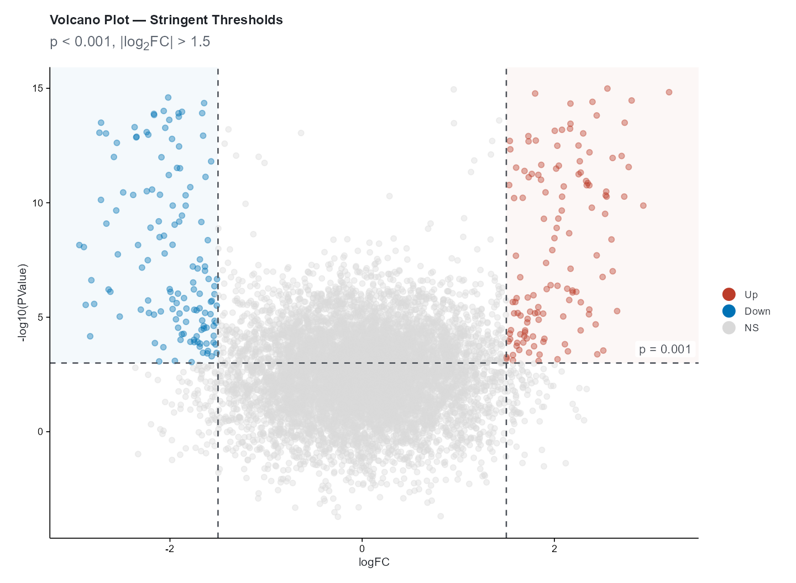
Figure 4: MA Plot — DE Quality Check
The MA (Mean-Average) plot complements the volcano by showing the relationship between fold-change and mean expression level:
set.seed(123)
ma_data <- data.frame(
baseMean = 10^runif(3000, 0, 5),
log2FoldChange = rnorm(3000, 0, 0.6),
padj = runif(3000)
)
# Add "real" DE genes
ma_data$log2FoldChange[sample(1:3000, 150)] <- rnorm(150, 2, 0.5)
ma_data$log2FoldChange[sample(1:3000, 150)] <- rnorm(150, -2, 0.5)
clitheme("science")
#> Theme set to: science
cliplot(log2FoldChange ~ baseMean, data = ma_data,
type = type_ma(
pval_cutoff = 0.05,
add_loess = TRUE,
loess_color = "#3C5488",
sig_color = "#E64B35",
ns_color = "grey70",
point_size = 1.2,
point_alpha = 0.4
),
title = "**Figure 4** — MA Plot",
subtitle = "DE genes highlighted (padj < 0.05), LOESS trend") +
cli_markdown()
#> `geom_smooth()` using formula = 'y ~ x'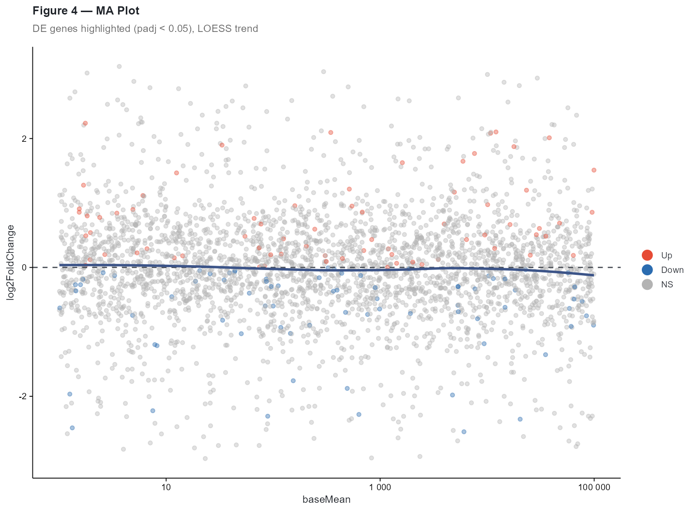
The MA plot shows: - y-axis: fold change (biological effect size) - x-axis: Mean normalized counts (expression level, log₁₀ scale) - Red points: Significant DE genes - Blue curve: LOESS trend line (checks for intensity-dependent bias) - Horizontal dashed line: (no change)
Heatmap: Clustered Expression Matrix
For completeness, here’s a clustered heatmap workflow:
set.seed(789)
expr_mat <- matrix(rnorm(500), nrow = 50)
rownames(expr_mat) <- paste0("Gene_", 1:50)
colnames(expr_mat) <- paste0("Sample_", sprintf("%02d", 1:10))
# Column annotations
ann_col <- data.frame(
Condition = rep(c("Control", "Treatment"), each = 5),
Batch = rep(c("A", "B"), 5),
row.names = colnames(expr_mat)
)
# Annotation color mapping
ann_colors <- list(
Condition = c(Control = "#4DBBD5", Treatment = "#E64B35"),
Batch = c(A = "#E18727", B = "#3C5488")
)
cliplot(expr_mat,
type = type_heatmap(
scale = "row",
cluster_rows = TRUE,
cluster_cols = TRUE,
annotation_col = ann_col,
annotation_colors = ann_colors,
color_low = "#4575B4",
color_mid = "white",
color_high = "#D73027",
fontsize = 9
))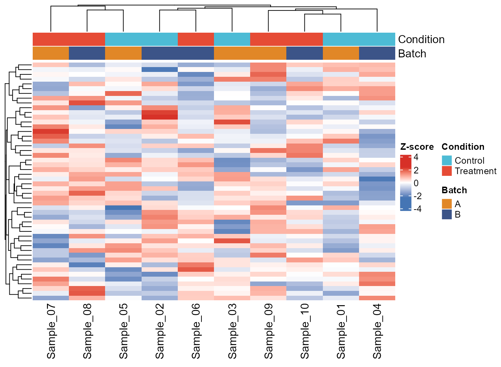
Note: The heatmap uses
ComplexHeatmapwhen available, falling back topheatmap. Install withinstall.packages("ComplexHeatmap")for the best experience.
Figure 5: Infographic Bar Chart — Results Comparison
The type_infobar() creates media-ready bar charts with
per-category custom colours, footer boxes, and reference lines. Use it
for polling, survey results, or any side-by-side comparison where each
category carries semantic colouring:
infobar_data <- data.frame(
endpoint = c("ORR", "DCR", "PFS6", "OS12", "AE3"),
value = c(42, 68, 55, 72, 12),
bar_color = c("#0073C2", "#4DBBD5", "#00A087", "#3C5488", "#E64B35"),
box_color = c("#005A9E", "#3AA8C2", "#00806A", "#2A3E6E", "#C9302C"),
group = c("Efficacy", "Efficacy", "Efficacy", "Efficacy", "Safety"),
change = c("(+3)", "(+5)", "(-1)", "(+2)", "(-4)"),
stringsAsFactors = FALSE
)
cliplot(value ~ endpoint, data = infobar_data,
type = type_infobar(
bar_colors = setNames(infobar_data$bar_color,
infobar_data$endpoint),
box_colors = setNames(infobar_data$box_color,
infobar_data$endpoint),
box_labels = infobar_data$endpoint,
box_sub_labels = infobar_data$group,
change_labels = infobar_data$change,
reference_line = 40,
reference_label = "40%",
value_suffix = "%",
bar_width = 0.82
),
title = "**Figure 5** — Efficacy & Safety Endpoint Comparison",
subtitle = "Clinical trial results by endpoint category")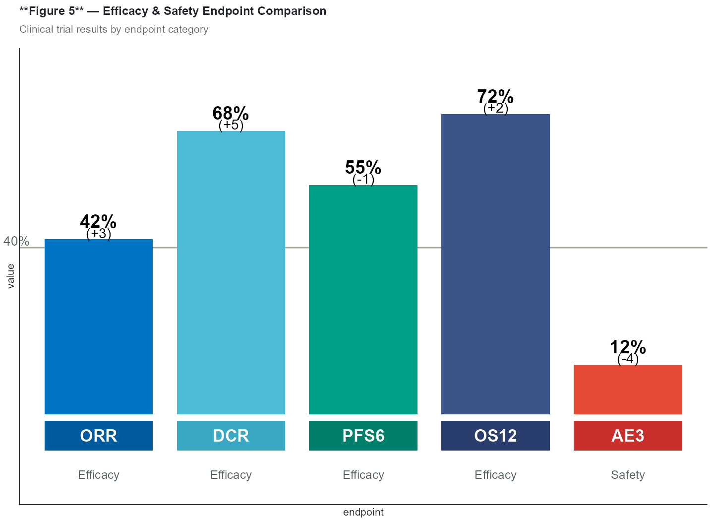
Customization
| Parameter | Default | Description |
|---|---|---|
bar_colors |
NULL (jco palette) |
Named vector of per-bar fill colours |
box_colors |
NULL (no boxes) |
Named vector of footer box fill colours |
box_labels |
NULL |
Labels inside footer boxes (vector, one per bar) |
box_sub_labels |
NULL |
Sub-labels below footer boxes |
change_labels |
NULL |
Change annotations below value labels |
reference_line |
NULL |
y-axis value for a horizontal reference line |
reference_label |
NULL |
Label text next to the reference line |
value_suffix |
"" |
Suffix appended to value labels (e.g. "%") |
Summary
In this vignette we produced five publication-ready omics figures:
- PCA — Dimensionality reduction with confidence ellipses
- Correlation Matrix — Pairwise correlations with hierarchical clustering
- Volcano Plot — Differential expression significance vs. fold-change
- MA Plot — Fold-change vs. mean expression with LOESS trend
- Infobar — Per-category infographic comparison with custom styling
Reset global settings:
clitheme()